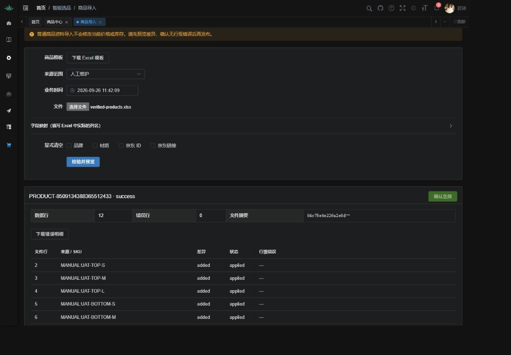
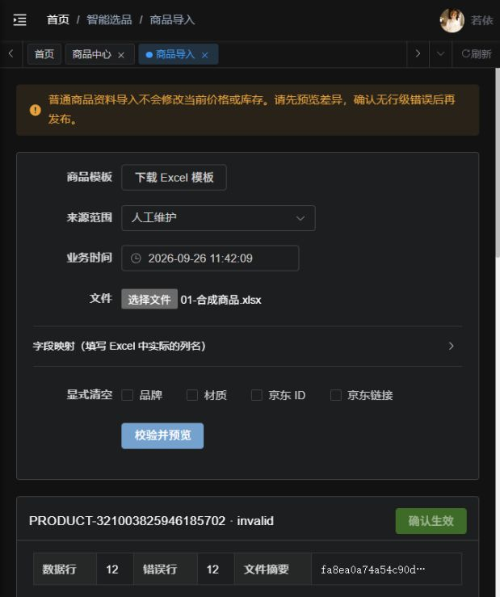
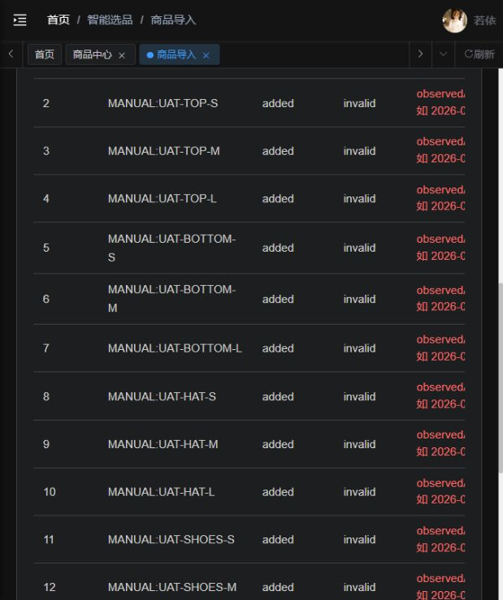

智能选品：六阶段整改核验报告
部分执行，尚未完成业务验收
2026-09-26 · 共同基线 38b36c9 + 当前未提交整改代码 · 执行者 Codex
完整 UAT：7 项；Pass 0 / Fail 0 / Blocked 7 / NotRun 0 / N/A 0。七项均有未满足的前置或剩余步骤，包含已通过的子步骤。独立技术接口检查：13 / 13 Pass。
用户决定：本次整改待确认；此前演示版本不接受。
环境与边界
独立工作树；MySQL 11253 / Redis 11254 / Java 11255 / 前端 11256；fashion_uat 专属测试库。前端曾可用，随后连接重置并停止监听，恢复启动被自动审批策略拒绝；Python 未启动。
Codex 内置浏览器 / IAB，任务标签 13；内核版本未取得；截图时 1440×1000，部分早期截图为窄视口
任务专用数据库、端口、账号及数据目录；未修改共享服务或业务数据。测试数据保留用于复验。Python / 真实 AI 质量未验证。
Network：商品预览、发布、历史请求最终 HTTP 200；之前 multipart 请求失败已修复；后续出现 ERR_CONNECTION_RESET / ERR_CONNECTION_REFUSED，不能宣称控制台无错误。恢复前端进程的两次命令均被自动审批策略拒绝，仅返回 blocked by policy，未给出具体规则原因。
唯一逐项验收清单 · 13 项接口检查及实际值
UAT-FIX-01 · 电商样本与来源
Blocked · 待截图（场景未完成）
- 前置
- 桌面端采集样本
- 实际输入
- 12 条合成 SKU；商品 1 份、价格和库存各 2 份 Excel；不含真实平台库存
- 计划步骤
- 检查来源与SKU，核对原始样本
- 预期
- 商品、真实 SKU、链接和采集时间可追溯
- 实际执行、问题与剩余步骤
- 尚无桌面端交付的真实电商样本。本轮 12 条 SKU 全部为明确标记的合成数据，不能证明京东或其他平台采集成功。
- 页面入口
- http://fashion-remediation.localhost:11256
UAT-FIX-02 · 商品 Excel 导入与编辑
Blocked · 部分步骤已截图并回读；剩余步骤待截图
- 前置
- 真实商品Excel，商品导入/编辑权限
- 实际输入
- 12 条合成 SKU；商品 1 份、价格和库存各 2 份 Excel；不含真实平台库存
- 计划步骤
- 上传、映射、预览、发布、编辑、刷新
- 预期
- 预览、发布、详情和刷新回读一致
- 实际执行、问题与剩余步骤
- 内置浏览器上传、预览、发布 12 条合成 SKU 成功（批次 8509134388365512433）；接口回读确认 12 条持久化、服装属性和平台 SKU 前导零保存，观察价格未覆盖销售价。真实样本、详情编辑和重登录批次回读尚未完成；前端中断阻塞余项。
- 页面入口
- http://fashion-remediation.localhost:11256
截图/UAT-FIX-02-商品发布成功.png

接口核验.json
UAT-FIX-03 · 价格两次更新
Blocked · 待截图（场景未完成）
- 前置
- 两版合成价格Excel，专属测试商品
- 实际输入
- 12 条合成 SKU；商品 1 份、价格和库存各 2 份 Excel；不含真实平台库存
- 计划步骤
- 依次发布两版价格，检查前后值及库存
- 预期
- 差异正确，库存不变，可查历史
- 实际执行、问题与剩余步骤
- 实际 API 上传两版价格 Excel 并发布成功，每 SKU 第二版增加 1，库存保持不变，历史 2 批可查。尚未完成页面操作、恢复和全部异常分支；前端中断。
- 页面入口
- http://fashion-remediation.localhost:11256
接口核验.json
UAT-FIX-04 · 库存中心与更新
Blocked · 待截图（场景未完成）
- 前置
- 两版合成库存Excel，两个测试仓库
- 实际输入
- 12 条合成 SKU；商品 1 份、价格和库存各 2 份 Excel；不含真实平台库存
- 计划步骤
- 导入后查询明细/矩阵，对比两个仓库
- 预期
- 尺码、仓库互不串值，未知与零库存区分
- 实际执行、问题与剩余步骤
- 实际 API 上传两版库存 Excel 成功：MAIN 仓库 12 条，UAT-TOP-S=0，其他 11 条=52；价格不变。未导入仓库查询返回未知值而非 0，零库存筛选为 1 条。尚未完成第二个实存仓库、页面尺码矩阵和全部异常；前端中断。
- 页面入口
- http://fashion-remediation.localhost:11256
接口核验.json
UAT-FIX-05 · 人工方案选品
Blocked · 待截图（场景未完成）
- 前置
- 已有可选商品、测试客户与方案
- 实际输入
- 12 条合成 SKU；商品 1 份、价格和库存各 2 份 Excel；不含真实平台库存
- 计划步骤
- 确认需求、人工选品、数量分配、保存、重开
- 预期
- 可选商品、分配数量、保存并重新打开
- 实际执行、问题与剩余步骤
- 人工选品、数量分配、保存和移除入口已编码并完成定向单元测试；本轮尚未从真实页面保存并重开方案。样本图片/人工确认条件及前端服务仍待完成。
- 页面入口
- http://fashion-remediation.localhost:11256
UAT-FIX-06 · 错误与并发处理
Blocked · 部分步骤已截图并回读；剩余步骤待截图
- 前置
- 负数、缺行、未知SKU、过时/重复输入
- 实际输入
- 12 条合成 SKU；商品 1 份、价格和库存各 2 份 Excel；不含真实平台库存
- 计划步骤
- 各异常预览及发布并回读
- 预期
- 错误文件、旧版本和冲突不会部分生效
- 实际执行、问题与剩余步骤
- 页面实际拒绝时间格式错误的 12 行，确认生效不可用；修正 Excel 时间文本后成功导入。初次上传还发现 multipart 类型问题，修复后页面发布成功。缺行、负数、未知 SKU、旧版本、并发等场景尚未全部执行。
- 页面入口
- http://fashion-remediation.localhost:11256
截图/UAT-FIX-06-时间格式错误.png

截图/UAT-FIX-06-时间格式错误明细.png

UAT-FIX-07 · 报价与完整流程
Blocked · 待截图（场景未完成）
- 前置
- 前述商品/价库/方案
- 实际输入
- 12 条合成 SKU；商品 1 份、价格和库存各 2 份 Excel；不含真实平台库存
- 计划步骤
- 完整操作并独立复算报价
- 预期
- 导入商品进入方案报价，结果可对账
- 实际执行、问题与剩余步骤
- 完整方案到报价、独立金额复算未执行；依赖真实来源样本、方案页面及前端恢复。不能用接口导入成功替代整条链路验收。
- 页面入口
- http://fashion-remediation.localhost:11256
后续按已批准阶段继续
- FIX-01：接入桌面端真实电商来源样本并核对 SKU、图片及来源。
- FIX-02：复验详情编辑、重复导入与批次回读；补齐属性展示和导出缺口。
- FIX-03：价格页面更新、恢复及异常场景。
- FIX-04：第二实存仓库、尺码矩阵及异常/并发。
- FIX-05：完成图片与确认条件后的人工选品、保存重开。
- FIX-06：完整报价复算、剩余截图和逐项复验。
前端恢复操作受当前自动审批策略阻塞；未将恢复责任转给用户操作浏览器。已有代码未提交，阶段退出条件尚未全部满足。
报告生成与检查
报告由验收清单 JSON 和实际接口核验 JSON 生成，图片来自本次内置浏览器操作并已回读。静态检查核对七个 ID、状态、文件存在和接口结果。报告视觉检查状态：未执行；应用打开请求返回 queued，未取得报告渲染画面。最新前端类型检查通过，11 文件 / 37 单元测试通过，详见 技术验证与限制。
已保留上传失败、错误文件与修复后成功的事实，未用成功子步骤覆盖整体缺口。